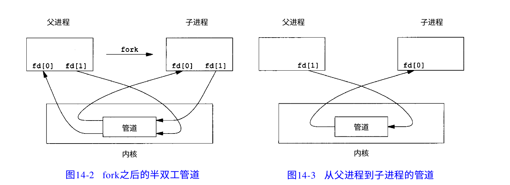

2021-10-17
进程创建
pid_t fork(void):
包含在头文件 unistd.h 中>
其中 pid_t 是在 sys/types.h 中定义的宏
fork() 函数会创建一个子进程，相当于当前进程（父进程）的复制，
父进程数据空间、堆、栈等资源都会复制一份到子进程中。
在子进程创建后，父进程和子进程都会停留在fork()函数的调用中等待返回，
这就意味着该函数会在父子进程中分别返回一次。
在父进程中，fork() 返回子进程的pid
在子进程中，fork() 返回0
当发生错误时，返回负值。
可以通过返回值检测当前执行的是父进程还是子进程。
当返回后，父进程和子进程会一起继续执行后续的代码，而之前已经执行过的代码子进程是不会再执行一遍的
pid_t wait(int *__stat_loc):
包含在头文件 wait.h 中
wait() 常与 fork() 一起出现
父进程一旦调用了wait就立即阻塞自己，由wait自动分析是否当前进程的某个子进程已经退出，
当找到这样一个进程时，便会彻底销毁该子进程，并收集退出信息储存在参数 status 中，之后返回子进程的pid
如果找不到这样的进程，父进程便会一直阻塞
如果我们不关心子进程是如何退出的，形参填NULL即可
当当前进程没有子进程时，wait就会返回-1表示调用失败，同时errno被置为ECHILD。
pid_t waitpid(pid_t pid,int *status,int options)
使用头文件 wait.h 和 sys/types.h
waitpid()和wait()的作用相似，可以等待指定pid的进程，或者说，wait()就是包装后的wait()
当参数 pid = -1 时，即等待任意一个子进程退出，此时作用和wait()一样
当参数 pid = 0 时，等待同一个进程组中的任意子进程
参数options是一个位掩码，通常设为0，也可以取为WNOHANG、WUNTRACED
当设为WNOHANG时，则该函数会立即产生一个返回值，若没有找到子进程则返回0
共享内存
int shm_open(const char *name, int oflag, mode_t mode)：
使用时需引入一下头文件：
#include <sys/mman.h>
#include <sys/stat.h> /* 对于模式常量 */
#include <fcntl.h> /* 对于 oflag 常量 */
除此之外，还很可能需要在编译时连接库，使用-lrt
该函数会打开或创建一个共享内存对象（通常保存在 /dev/shm/ 路径下），
实质就是打开文件，可以使用文件相关函数，也需要close()关闭。
返回值为打开共享内存文件描述符fd，成功时为正数，失败时为负数
(Linux系统将所有设备都当作文件来处理，而Linux用文件描述符来标识每个文件对象。)
其中各参数：
- name: 表示文件名，只能填名字，不能填路径
-
oflag:
是一个位掩码，表示文件的操作属性（权限），可以包括以下宏的位运算：
- O_RDONLY 只读
- O_RDWR 读写
- O_CREAT 若文件不存在，则创建
- O_TRUNC 若文件已存在，则截断
- O_EXCL 在指定O_CREAT的情况下若文件已存在，则返回错误
- mode： 表示文件的共享模式，应在指定O_CREAT的情况下使用，即创建文件后的用户权限
int ftruncate(int fd, off_t length)：
位于头文件 unistd.h 中
ftruncate()会将参数 fd 指定的文件大小改为参数 length 指定的大小。如果原来的文件大小比参数length大，则超过的部分会被删去。
off_t 是 long 的宏
使用该函数时，打开的文件必须具有写入权限
该函数的功能是重置文件的大小，任何open函数打开的文件都可以用该函数，包括但不限于shm_open打开的文件
执行成功则返回0，失败返回-1，错误原因存于errno（errno.h中定义的一个int型变量）。
void* mmap(void* start,size_t length,int prot,int flags,int fd,off_t offset);
位于头文件 sys/mman.h 中
该函数的功能是将文件映射到内存中，使得我们用操作内存指针的方式来操作文件数据。
文件被映射到多个页上，如果文件的大小不是所有页的大小之和，最后一个页不被使用的空间将会清零。
即映射的内存空间最小单位为页
其中各参数：
- start： 将文件映射到的内存地址，一般应该传递NULL来由Linux内核指定。
- length： 映射区的长度。长度单位是以字节为单位，不足一内存页按一内存页处理
- prot: 是一个位掩码，映射的内存区域的操作权限（保护属性），包括PROT_READ、PROT_WRITE、PROT_EXEC、PROT_NONE
-
flags: 位掩码，指定映射对象的类型，包括
- MAP_SHARED： 与其它所有映射这个对象的进程共享映射空间。对共享区的写入，相当于输出到文件。直到msync()或者munmap()被调用，文件实际上不会被更新。
- MAP_PRIVATE： 建立一个写入时拷贝的私有映射。内存区域的写入不会影响到原文件。这个标志和以上标志是互斥的，只能使用其中一个。
- MAP_ANON: 进行匿名映射，此时fd参数要填-1
- 等
- fd： 用来建立映射区的文件描述符，用 shm_open打开或者open打开的文件。
- offset： 映射文件相对于文件头的偏移位置，应该按4096字节对齐。
要对该映射的内存写入内容，可以使用sprintf()或write()函数，在此之前先将mmap的返回值类型由 void* 转换成 char*
int munmap(void *start,size_t length)：
使用头文件 unistd.h 和 sys/mman.h
函数功能是取消参数start所指的映射内存起始地址，参数length则是欲取消的内存大小。
当进程结束或利用exec相关函数来执行其他程序时，映射内存会自动解除，但关闭对应的文件描述符时不会解除映射。
返回值: 如果解除映射成功则返回0，否则返回－1，错误原因存于errno中
int shm_unlink(const char *name):
使用头文件 sys/stat.h 和 fcntl.h
该函数用于删除指定的共享内存对象
(匿名)管道通信
int pipe(int filedes[2]):
使用头文件 unistd.h
该函数会在两个进程中创建一个匿名(普通)管道，
参数数组即为要通信的两个文件的文件描述符（不需要我们赋值，在调用pipe函数后直接将[0]和[1]当做文件操作对象）
其中[0]为管道读端，只允许从该端读取管道中的信息；[1]为管道写端，只允许从该段向管道中写信息
(或许把它看作一个FIFO的队列会更好理解，[1]为队列尾，[0]为队列头)
管道可以看作是一个特殊共享文件，实质是在内存区当中开辟一个固定大小的缓冲区
从管道中读取走的那部分信息会从缓冲区中清楚
需要注意的是管道是半双工通信的，如果需要双方通信时，需要建立起两个管道
管道只能用于父子进程(fork())或者兄弟进程之间，即具有亲缘关系的进程
返回值：成功 0 失败 -1，错误信息保存在errno中
通常情况下，一个进程先用pipe()创建一个管道后，再用fork()创建子进程，实现两个父子进程间的通信 (当然我们也可以在同一个进程中使用pipe，但那有什么意义呢？)
对管道的读写，可以使用文件相关的函数read()、write()、close()，(这些函数的参数都是文件描述符)
如read(filedes[0], buf, BUF_LEN)可将管道中指定字节数读到buf中

对于不再使用的管道端，一定要记得用close()关闭它
当管道中没有数据且使用read()时，若管道写端引用计数（即描述符数量）为0，则read()直接返回0，相当于读文件结束。
若写端引用计数不为0，那么read()会阻塞在那里等待有数据被写入管道
对于读端引用计数也是一样的，所以一定要关闭
很多时候，一个进程对一个管道不会既读又写，所以在进程中我们先关闭一个端口
如果要双向通信，请使用两个管道
可能发生的坏事：当一个管道读和写各仅有一个引用且来自于同一个进程，
此时调用read()会使进程阻塞，然而只有它自己可以将数据写入管道，但它阻塞在那了，导致这个进程无法终止